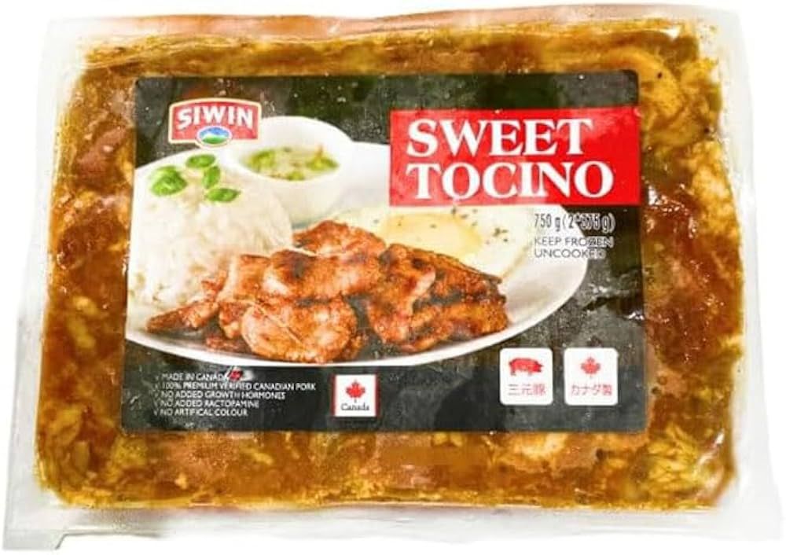

Tocino
Tocino is a sweet a savory Filipino cured meat made from pork belly. This recipe will show one method to cook
tocino.

Ingredients
- One package of tocino
- Oil
- Water
- Optional:Brown Sugar
Tools
- Stovetop
- Large pot to fit all of the tocino in
- Large spoon
Steps
- Set the temperature of the stove to high
- Put the tocino into the pot
- Immediately add oil & water to the pot until it barely covers the tocino
- Wait for the water to boil, then set the temperature of the stove to medium-high
- While the tocino is softening in the water, break it into pieces with the spoon
Optional: Add some brown sugar to the pot for additional sweetness
- Keep boiling the tocino until the water has evaporated, then start stir-frying the tocino
- Stir-fry the tocino until you have a few pieces that are slighltly charred / burnt
- Remove the tocino from the pot into a serving dish, and enjoy!